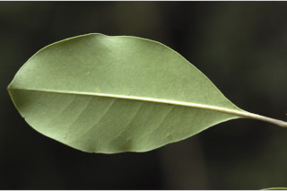
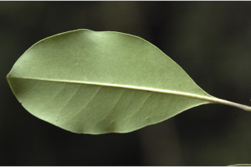

Trees up to 15 m tall.
15 ಮೀ. ಎತ್ತರದವರೆಗಿನ ಮರಗಳು.
மரங்கள் 15 மீ. உயரம் வரை வளரக்கூடியது.
Bark greyish brown, corky lenticellate.
ತೊಗಟೆ ಬೂದು ಮಿಶ್ರಿತ ಕಂದು ಬಣ್ಣ ಹೊಂದಿದ್ದು ವಾಯುವಿನಿಮಯ ‘ದಟ್ಟ ಬೆಂಡು’ ರಂಧ್ರಗಳ ಸಮೇತವಿರುತ್ತದೆ.
மரத்தின் பட்டை சாம்பல்-ப்ரவுன் நிறமானது, பெரிய பட்டைத்துளைகள் (லெண்டிசெல்லேட்) உடையது.
Young branchlets quadrangular, terete when mature, glabrous, lenticellate.
ಎಳೆಯ ಕಿರುಕೊಂಬೆಗಳು ನಾಲ್ಕುಕೋನಗಳನ್ನು ಹೊಂದಿದ್ದು ಬಲಿತಾಗ ದುಂಡಗಿರುತ್ತವೆ ಮತ್ತು ರೋಮರಹಿತವಾಗಿರುತ್ತವೆ ಹಾಗೂ ವಾಯುವಿನಿಮಯ ಬೆಂಡು ರಂಧ್ರಗಳ ಸಮೇತವಿರುತ್ತದೆ
சிறிய நுனிக்கிளைகள் குறுக்குவெட்டுத் தோற்றத்தில் நான்கு கோணங்களுடையது, முதிரும் போது குறுக்குவெட்டுத் தோற்றத்தில் வளையமானது, உரோமங்களற்றது, பட்டைத்துளைகள் (லெண்டிசெல்லேட்) உடையது.
Leaves simple, opposite, decussate; petiole 2-3 cm long, planoconvex in cross section, glabrous; lamina 8-15 x 4.5-5 cm, elliptic, apex acute, base attenuate, margin entire or slightly wavy, coriaceous, glabrous and paler beneath; midrib slightly canaliculate above; secondary_nerves 8-12 pairs, slender; tertiary_nerves broadly reticulate or obscure.
ಎಲೆಗಳು ಸರಳವಾಗಿದ್ದು ಕತ್ತರಿಯಾಕಾರದ ಅಭಿಮುಖ ಜೋಡನಾ ವ್ಯವಸ್ಥೆಯಲ್ಲಿರುತ್ತವೆ; ಎಲೆತೊಟ್ಟುಗಳು 2 ರಿಂದ 3 ಸೆಂ.ಮೀ.ಉದ್ದವಿದ್ದು ,ಅಡ್ಡ ಸೀಳಿದಾಗ ಸಪಾಟ ಪೀನ ಮಧ್ಯದ ಆಕಾರದಲ್ಲಿರುತ್ತವೆ, ಮತ್ತು ರೋಮರಹಿತವಾಗಿರುತ್ತದೆ; ಪತ್ರಗಳು8-15 X 4.5-5 ಸೆಂ.ಮೀ. ಗಾತ್ರ, ಅಂಡವೃತ್ತದ ಆಕಾರ,ಚೂಪಾದ ತುದಿ,ಒಳಬಾಗಿದ ಬುಡ, ನಯವಾದ ಅಥವಾ ತುಸುವಾಗಿ ತರಂಗಿತವಾದ ಅಂಚು, ತೊಗಲನ್ನೋಲುವ ಮೇಲ್ಮೈ ಹೊಂದಿದ್ದು ತಳಭಾಗದಲ್ಲಿ ರೋಮರಹಿತವಾಗಿರುತ್ತವೆ ಮತ್ತು ತೆಳು ಬಣ್ಣ ಹೊಂದಿರುತ್ತವೆ; ಮಧ್ಯನಾಳ ಮೇಲ್ಭಾಗದಲ್ಲಿ ಸ್ವಲ್ಪ ಮಟ್ಟಿನ ಕಾಲುವೆ ಗೆರೆ ಹೊಂದಿರುತ್ತದೆ;ಎರಡನೇ ದರ್ಜೆಯ ನಾಳಗಳು 8 ರಿಂದ 12 ಜೋಡಿಗಳಿದ್ದು ತೆಳುವಾಗಿರುತ್ತವೆ;ಮೂರನೇ ದರ್ಜೆಯ ನಾಳಗಳು ವಿಶಾಲ ಜಾಲಬಂಧ ನಾಳ ವಿನ್ಯಾಸದಲ್ಲಿರುತ್ತವೆ ಅಥವಾ ಅಸ್ಪಷ್ಟವಾಗಿರುತ್ತವೆ.
இலைகள் தனித்தவை, எதிரடுக்கமானவை, குறுக்குமறுக்கானவை; இலைக்காம்பு 2-3 செ.மீ. நீளமானது, இலைக்காம்பு குறுக்குவெட்டுத் தோற்றத்தில் பிளேனோகான்வக்ஸ், உரோமங்களற்றது; இலை அலகு 8-15 X 4.5-5 செ.மீ., நீள்வட்ட வடிவானது, அலகின் நுனி கூரியது, அலகின் தளம் அட்டனுவேட், அலகின் விளிம்பு முழுமையானது அல்லது சிறிது அலை போன்றது, கோரியேசியஸ், உரோமங்களற்றது மற்றும் கீழ்பரப்பு வெளிறிய நிறமானது; மையநரம்பு மேற்புறத்தில் அலகின் பரப்பைவிட சிறிது பள்ளமானது; இரண்டாம் நிலை நரம்புகள் 8-12 ஜோடிகள், மெல்லியது; மூன்றாம் நிலை நரம்புகள் அகன்ற வலைப்பின்னல் போன்றவை அல்லது கண்களுக்கு புலப்படாது.
Inflorescence axillary, cymose panicles, 8 cm long, glabrous; flowers pale yellow; pedicel 0.2 cm long.
ಪುಷ್ಪಮಂಜರಿಗಳು ಅಕ್ಷಾಕಂಕುಳಿನಲ್ಲಿನ ಪುನರಾವೃತ್ತಿಯಾಗಿ ಕವಲೊಡೆಯುವ ಮಧ್ಯಾರಂಭಿ ಮಾದರಿಯಲ್ಲಿರುತ್ತವೆ;ಹೂಗಳು ತೆಳು ಹಳದಿ ಬಣ್ಣದವು;ತೊಟ್ಟುಗಳು 0.2 ಸೆಂ.ಮೀ. ಉದ್ದವನ್ನು ಹೊಂದಿರುತ್ತವೆ.
மஞ்சரி இலைக்கோணங்களில் காணப்படுபவை, சைம் வகை பேனிக்கிள் மஞ்சரி, 8 செ.மீ. நீளமானது, உரோமங்களற்றது; மலர்கள் வெளிறிய மஞ்சள் நிறமானவை; மலர்காம்பு 0.2 செ.மீ. நீளமானது.
Drupe, ellipsoid, oblique, up to 3.5 cm long, glabrous, purple when ripe; seed one.
ಡ್ರೂಪ್ಗಳು ಅಂಡವೃತ್ತದ ಆಕಾರದಲ್ಲಿದ್ದು ,ಓರೆಯಾಗಿರುತ್ತವೆ ಮತ್ತು 3.5 ಸೆಂ.ಮೀ. ಉದ್ದ ಹೊಂದಿದ್ದು, ರೋಮರಹಿತವಾಗಿದ್ದು,ಕಳಿತಾಗ ಕೆನ್ನೀಲಿ ಬಣ್ಣದಲ್ಲಿರುತ್ತವೆ; ಬೀಜಗಳ ಸಂಖ್ಯೆ ಒಂದು.
உள்ளோட்டுத்தசைகனி (ட்ரூப்), நீள்வட்ட வடிவானது, சமமற்றது, 3.5 செ.மீ. நீளமானது, உரோமங்களற்றது, கனியும் போது பர்புள் நிறமானது; ஒரு விதையுள்ள கனி.


 
